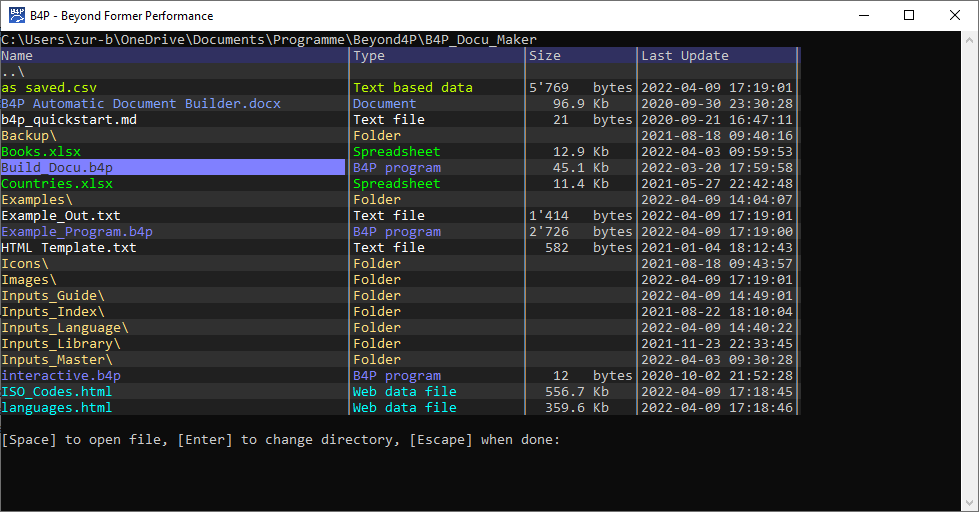

Introduction
Various B4P functions provide interactive full screen features, making full use of the currently available console size. In most cases, the navigavable contents will be displayed on the full screen and the previous contents will will be recovered when done viewing.
Viewing Tables
See View Tables Interactively to learn how to visualize tables.

Viewing Directories
See View Directory Listings to learn how to visualize tables.

Available Navigation Keys
| Key | Function |
|---|---|
| Arrow left | Moves 1 field to the left |
| Arrow right | Moves 1 field to the right |
| Arrow up | Moves 1 row up |
| Arrow down | Moves 1 row down |
| Home | Move to 1st column on same row |
| End | Move to last column on same row |
| CTRL-Arrow right | Increases width of the current column |
| CTRL-Arrow left | Reduces width of current column by 1 character |
| CTRL-Arrow up | Reduces number of text rows shown in current row |
| CTRL-Arrow down | Increases number of text rows shown in current row |
| CTRL-Home | Move to 1st row on same column |
| CTRL-End | Move to last row on same column |
| CTRL-C | Copies marked field to clipboard (can be pasted as text in B4P and in other applications) |
| Function key F1 | Help |
| Function key F4 | Sort table in alphabetical order at selected column |
| ENTER key | Ends viewing, returning info of selected item (exceptions apply, e.g. for View directory listings where pusing ENTER on a folder will change the current folder and display that one instead) |
| ESCAPE key | Ends viewing, not returning info of selected item |
Depending on the contents shown:
- Additional commands may apply to support further features
- Normally, all contents are shown in light gray color, those not fully fitting in the given fields are shown in yellow. However exceptions apply, for example for directory listings where colors are used to visualize common file types.